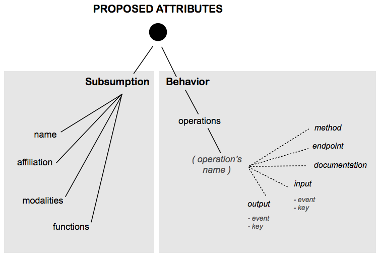
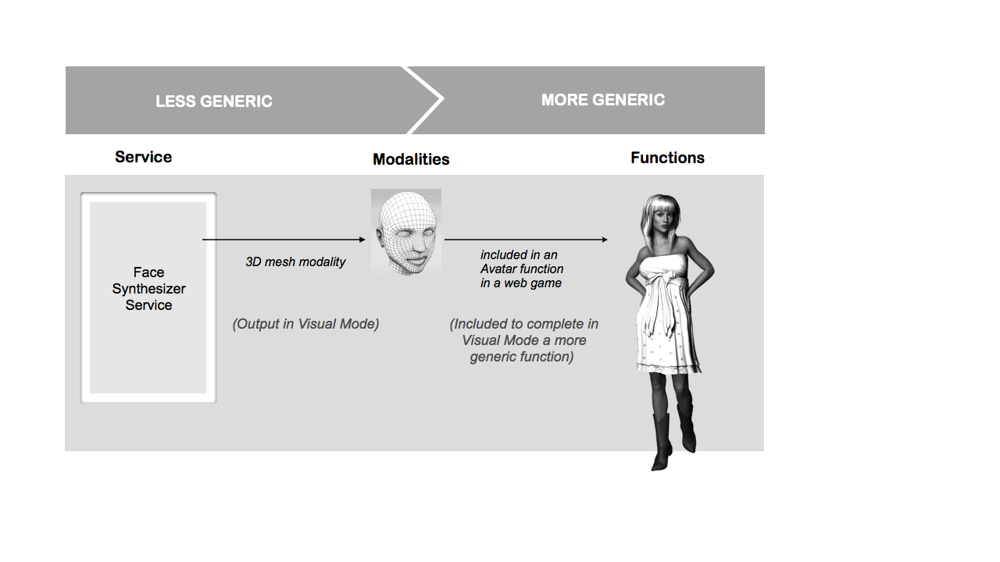

This proposal is designed to support the annotation of Modality Components, to allow their discovery and registering in a multimodal system. The focus is the dynamic discovery of Modality Component as services using generic information about the underlaid properties and type of processes. This information is provided by an announcement and a description (a capabilities manifest, for example) advertised in some network.
The Modality Components can be described with a document that evolves on complexity depending on the application needs. This description can be limited to indications about the Input and Output interfaces or be more detailed describing functional and non-functional properties, using as a basis the Extensible Multimodal Annotation Markup Language (EMMA) [W3C-EMMA 2009].
The meaning of the terms for a controlled vocabulary in the form of a Glossary for the annotation of Modality Components, is divided in two parts: Subsumption terms and Life-Cycle an behavior terms.
Figure 1: Basic Vocabulary for MC annotation
The first part concerns the attributes incorporating the Modality Components under a more general category based on multimodal criteria. It is structured on metadata classifying the Modality Component according to its membership or association to a Multimodal class in conformance to the modes handled by the System. This first description allows a discovery filtering for a precise target mode.
| TERMS BASED ON SUBSUMPTION | Name | The intentional name of the service |
| Affiliation | The high level MC category to adhere (to parse using generic tasks described by a multimodal taxonomy or ontology ) | |
| Modality | A list of the supported modalities classed by mode (to parse using generic modalities described by a multimodal taxonomy or ontology ) | |
| Functions | A list of the supported high-level functions classed by mode (to parse using generic functions described by a multimodal taxonomy or ontology ) |
The first term, "Name" is used to announce the service in the network. It is a compound name in three parts and provides the semantics about the implementation of the component, its most important attribute and its more important role. For example: SVG_COUNTER_DISPLAY, HTML_VIDEO_CONTROL
Based on this term, the Modality Component's capabilities can be classified from a high level perspective, for example, we can infere that the first component is part of the device class "TEXT_DISPLAYS", and the second to the class "MEDIA_CONTROLLERS". The triplet is inspired on the intentional name schema [ADJIE-1999] and show hierarchical tree relationships between general concepts (including some negative differentiating aspects). These names are intentional; they describe the intent of the Modaity Component and its implementation in the form of a tuple of attributes.
The second term "Affiliation" specifies the generic information about some complementary association of high level. It puts forward an aspect of the Modality Component that could affect its selection and that is part of the advertisement policy of the service. It can be for example, a complementary inheritance relationship or a relation based on some association or analogy. Some examples of affiliation can be ANIMATED_GRAPHICS or in the second, CONTROLLERS. Thus, this term can be used to represent some kind of inheritance or association with a more generic component class.
The third term "Modality" specifies the form in which some information is realized according to a precise mode. A modality is described by a situation and contains a recognizable logical structure: the information object. For example, a gesture modality is the visual realization and the haptic realization of some intention in a situation of communication (the information object is the «message» to communicate): a cross drawn in the air with a hand gesture, is perceived visually, and in some social contexts this expresses the benediction message.
In Figure 2 "myMCService" actsIn some mode that is perceived by a final user through a modality that is part of some functions, i.e. a face synthesis service actsIn the visual mode that is perceived through a 3D mesh modality that is part of an avatar function.

Figure 2: Mode, Modality, Function
The functions are the technical entities supporting a limited number of modalities according to the semantics of the message and the capabilities of the support itself. A Modality Component acts as a complex set of functions. Each function uses one or more modalities that realizes some mode. For example, in Figure 2 the Avatar uses a 3D mesh modality through a visual mode. The functions term defines a list of functions using in the service, ordered by importance and by mode. For example, a gesture recognizer service uses the sign language function, using the single hand gesture modality that is executed in the haptic mode and is perceived in the visual mode.
Finally, the operations is the IOPE list of the Modality Component Capabilities. Inputs, Outputs, Preconditions and Effects are the IOPEs properties.
An example of annotation for a video controller, that can be classified as a generic Commander Modality Component is:
{
"name": "feed",
"affiliation": "dataLoader",
"this_version": "1.0",
"endpoints": {
"1.0" : { "description":"http://localhost:5000/1-0/description.js", "uri": "http://localhost:5000/feed/1-0" }
},
"modalities":{
"cognitive":["PROCESSOR"] }
},
"media":{
"cognitive":["API"]
},
"operations": {
"POST_brands": {
"method":"POST",
"endpoint":"/brands",
"documentation":
"Operation to load item data in our servers from feeds using the xml, json or csv format. ",
"input": {
"event": {
"position": 0,
"metadata": { "Content-Type":{ "cognitive":["ExtensionNotification","StartRequest"] } },
"documentation": "If the event type is extension, the service returns just true or fail. If the event type is start, the service returns the processed data."
},
"key": {
"position": 2,
"metadata": { "Content-Type":{ "cognitive":["text/plain"] } },
"documentation": "The user key to acces this API"
},
"format": {
"position": 1,
"metadata": { "Content-Type":{ "cognitive":["text/plain"] } },
"documentation": "The data format for inputs and output (xml, json or csv format)"
},
"data": {
"position": 3,
"metadata": { "Content-Type":{ "cognitive":
["application/javascript","application/xml","text/csv"] } },
"documentation": "A list of item names or an url pointing to a file containing a list of item names."
}
},
"output": {
"event": {
"position": 0,
"metadata": { "Content-Type":{ "cognitive":["ExtensionNotification","StartResponse"] } },
"documentation": "The type of response event."
},
"success": {
"position": 1,
"metadata": { "Content-Type":{"cognitive":["data/boolean"] } },
"documentation": "True if the process was executed sucessfully or false in case of fail"
},
"data": {
"position": 2,
"metadata": { "Content-Type":{ "cognitive": ["application/javascript","application/xml","text/csv"] } },
"documentation": "The list of the items added and their ids or a fail message."
} }
} }
}
Code 1: MC Annotation example